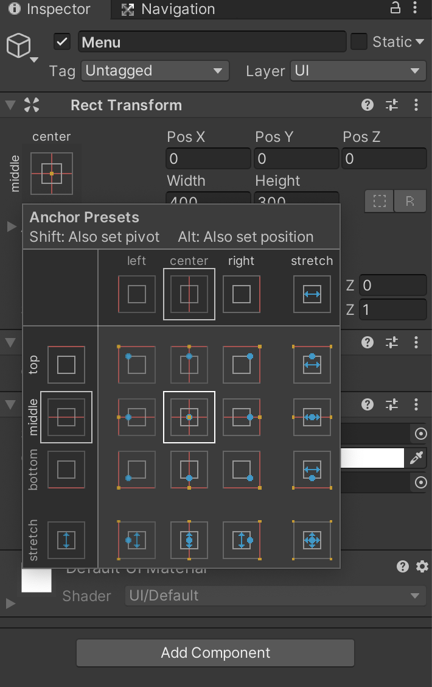
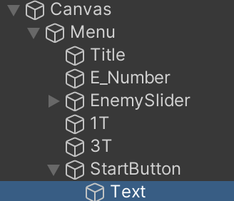
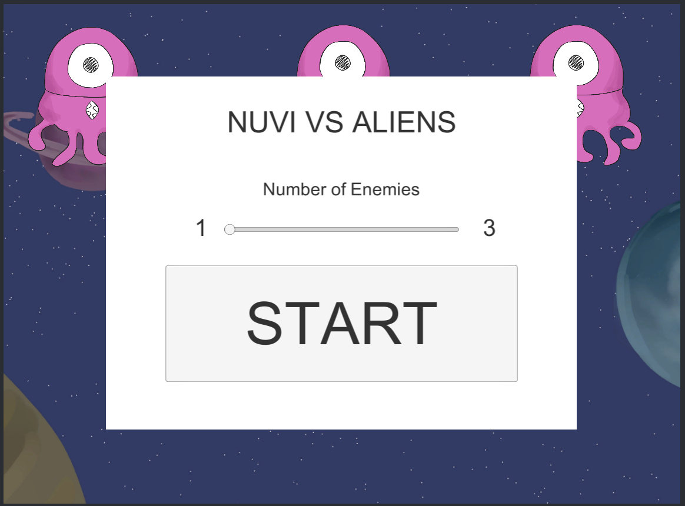

Construindo a UI: Parte 1
Tela do menu
Estamos quase terminando! Para completar este jogo, precisamos fazer mais duas coisas: adicionar uma UI (User Interface; Interface do Usuário) e um script Outline para juntar tudo. Vamos começar com a UI.
Clique com o botão direito na janela de hierarquia e, em vez de selecionar “Create Empty” (Criar Vazio), queremos criar uma tela. Procure por “UI” → “Canvas”. É aqui que todos os nossos elementos da UI estarão.
Em “Canvas”, queremos criar “UI” → “Image”. Renomeie “Image” para “Menu”. Esta será a nossa tela de menu. No inspetor de menu, redimensione a largura e a altura para 400 e 300, respectivamente. Queremos então ancorar a tela do Menu no meio. Dessa forma, mesmo que o tamanho da janela mude, a tela do menu permanecerá no meio. Para fazer isso, clique nos quadrados no canto superior esquerdo em Rect Transform no inspetor de menu.
Segure shift e alt (no Mac, segure option em vez de alt) e selecione o meio/centro nas predefinições da Âncora. Isso definirá o pivô do Menu para 0 enquanto define a posição para o meio/centro.
Agora no Menu, crie uma “UI” → “Text” e renomeie-a para “Title” (Título). Mude o texto para o nome que você gostaria de nomear seu jogo em Texto no inspetor “Title”! Deixe sua criatividade fluir! Também podemos alterar o tamanho da fonte para o que você quiser.
Se o texto desaparecer, use a ferramenta rect para aumentar o tamanho da caixa de texto na janela Scene (Cena)!
Altere a predefinição da âncora para superior/central. Mexa na entrada Pos Y até que goste do posicionamento do seu texto!
Faça outra “UI” → “Text” no Menu na hierarquia e renomeie para “NumEnemyT”. Altere o texto para “# of Enemies” e altere a fonte para alguns tamanhos menores que o título. Certifique-se de definir a posição da âncora para cima/centro também e mexa na entrada Pos Y!
Agora, vamos criar uma forma para o jogador escolher quantos inimigos deseja! Há muitas maneiras de fazer isso, mas neste tutorial usaremos um controle deslizante. Para criar um controle deslizante, clique com o botão direito em Menu e selecione “UI” → “Slider” e renomeie-o para “EnemySlider”. Defina a posição da âncora para cima/centro também e mexa na entrada Pos Y para que fique logo abaixo do texto “# of Enemies”. No inspetor de controle deslizante em Slider, altere o “Min Value” (Valor mínimo) para “1” e o “Max Value” (Valor máximo) para “3”. Marque também a caixa “Whole Number”, (Número inteiro) pois não podemos ter 1,5 inimigos em campo!
Agora que temos um controle deslizante, precisamos de uma chave visual para os jogadores saberem quantos inimigos podem fazer! Faça mais 2 caixas de texto em Menu e nomeie-as como “1T” e “3T”, respectivamente. Altere o texto “1T” para “1” e defina a posição da âncora para o meio/esquerda. Mexa nas entradas Pos X e Pos Y em Rect Transform para que fiquem alinhadas com o lado esquerdo do controle deslizante. Repita o processo com “3T”, mas mude o texto para “3”, ancore-o no meio/direita e alinhe-o com o lado direito do controle deslizante.
Agora, vamos criar um botão Iniciar. Em Menu na janela de hierarquia, crie “UI” → “Button” (Botão) e renomeie-o para “StartButton” (Botão de ínciar). Defina a posição da âncora para baixo/centro e mexa nas entradas Pos Y para colocá-la onde quiser! Se olharmos na hierarquia, há uma seta anexada ao StartButton. Clique nele para revelar um objeto de texto. Altere o texto desse objeto Texto para “Start”.
Agora temos a tela do menu configurada! A tela do seu menu deve ser parecida com isto!
Mas espere! Ainda não terminamos! Se rodarmos o jogo e pressionarmos o botão Iniciar, nada acontece! Queremos que a tela do menu desapareça. Para fazer isso, vamos criar outro script em nossa pasta Scripts na janela Projects em Assets e nomeá-lo como “StartButton”. Abra-o e copie e cole o código abaixo!
using System.Collections;
using System.Collections.Generic;
using UnityEngine;
public class StartButton : MonoBehaviour
{
public GameObject pop_up_box;
public void popDown()
{
pop_up_box.SetActive(false);
}
}
Este código faz com que qualquer GameObject atribuído a pop_up_box desapareça quando a função popDown() é chamada. Salve, depois arraste e solte esse script da pasta Scripts no inspetor StartButton. Em seguida, arraste o Menu da hierarquia para o “Pop_up_box” vazio sob o “Start Button (Script)”.
Finalmente, em “Button” no inspetor StartButton, clique no sinal “+” na caixa “On Click()”. Arraste o “StartButton” da hierarquia para a caixa que diz “None (Object)”.
Em seguida, abra a barra “No Function” (Sem Função) e passe o mouse sobre “StartButton”. Localize a função popDown() e selecione-a.
Agora, se rodarmos o jogo e pressionarmos o botão Iniciar, a tela do menu desaparecerá!